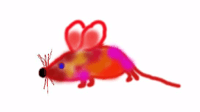
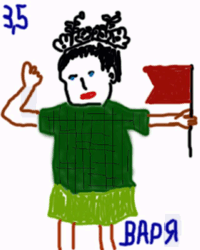
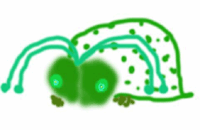

|
Хохот и Ужас
11 стихотворений, прочитанных в клубе О.Г.И. 16 мая 1999 г. (+ bonus
track)
1. Деловой друг
"Бизнес - это не шутка,- сказал он с улыбкой,-
и любая ошибка становится жуткой,
если кошку, к примеру, ты путаешь с рыбкой
или душ поутру - с телефонною трубкой."
"Но с другой стороны,- он добавил печально,-
не к лицу деловым унывать без причины.
И когда шестисотый взорвется случайно,
то на лыжи встает настоящий мужчина."
"Или, помню, прикол,- он качнул головою,-
в Шереметьево-2 я метнулся с братишкой.
Значит, принял товар - барахло кой-какое.
И три года питался кедровою шишкой."
"Тут удача нужна,- он подвигал плечами,-
тут тебе не футбол: разбежался и ебнул.
И не надо по мухам кидать кирпичами.
Муха села. Ты тихо подкрался. Прихлопнул."
"Вот такое кино,- посмотрел он в глаза мне,-
Ты, родной, не подумай, что я угрожаю.
Но учти: не оставлю и камня на камне,
если ты мне не скажешь сейчас: "Уважаю!".
"И не надо соплей,- он скрипел своим стулом,-
мы в России с тобой, а не в древнем Китае.
Жизнь по бартеру, брат, это значит - под дулом.
Если счетчик включен, то Гагарин взлетает."
"Ладно, все,- он мобильный достал из кармана,-
Мне на стрелку пора. До свидания, слякоть!"
Я остался один, но живой, как ни странно,
и не знал: мне смеяться теперь или плакать.
Москва, редакция журнала "Вечерняя Москва", осень 1997
2. Ночь в деревне
Черная ночь опустилась на деревянные плечи.
Белым туманом укутала бронзовые колени.
Вдула в пустые глаза барабанный огонь.
Как здесь душно! Как тяжко натоплены русские печи!
Мертвая ласточка влетела через окошко в сени.
Соломенный человечек наладил гармонь.
Песня протяжная полилась, как бензин из канистры.
В окно прадедушка стукнул костяными руками.
Кони железные прислушались на бегу.
Из лесу некто мохнатый вышел бесшумно и быстро.
В речке плещется жирная девочка с плавниками.
Жестяная береза пляшет на берегу.
Темень такая, что лошадью можно проткнуть корову.
В чистом поле три медных всадника, не найдя стакана,
Пьют из цистерны, закусывая кирпичом.
Отвязанная метла чешет подобру-поздорову.
Дом качается на крыльях огромного таракана.
Летучая мышь тычет в дверь золотым ключом.
Здесь на каждое дерево давно повесили бирку.
Из дупла богатырь напрасно зовет подругу.
Монах в униформе склоняется над душой.
Космонавты на небе сверлят очередную дырку,
А петух безголовый все ходит и ходит по кругу.
Скоро утро, и это, видимо, хорошо.
3. Звездный десант
Звездолет потерял управление,
и мы побежали в шлюз.
Тут такое началось представление -
Прости мне, всевышний Плюс!
Двести пятый, я сто сорок восьмой,
у нас пробоина в капитанской рубке.
Мы вряд ли вернемся домой,
подарите нашим вдовам по незабудке.
Огненные обломки, фигурки в скафандрах,
разлетающиеся звездные катера.
На губах замирает прощальная мантра,
и слов не разобрать ни хера.
База, база, мы патрульное судно,
нас подбили, падаем на Сатурн.
Со смертью обручат нас кольца Сатурна,
и не найдется для пепла нашего урн.
А все этот полудурок Коперник,
глухарь Циолковский да жердяй Королев.
Эх, пройтись бы по истории, взявши веник!
Жаль, полено не перерубишь соплей.
Полковник, полковник, вот мы вам пишем
из ядерного сопла последний SOS.
Новым мясом, полковник, заполните нашу нишу,
и заработайте уже нормальный бабцос!
30.1.1999. Москва, Китай-город.
4. Восток-Запад
Тарасу Ивченко
Я, в принципе, готов к пониманию,
Ведь смысла исполнен даже собачий лай.
Но только если можешь поехать в Германию,
Глупо ехать в Японию, Корею или Китай.
И дело здесь не в сравнении философий
И не в подходе типа "здесь ад - там рай".
Просто темное пиво лучше чем опий,
Которым славятся Япония, Корея или Китай.
А если уж так необходимо восточное -
Любой ресторан в Германии выбирай.
Кушай острое, сладкое, мясное или молочное -
Все что дарят Япония, Корея или Китай.
Но, с другой стороны, есть такая экзотика,
Которой не заменит северный край.
Ведь что вспоминается при слове "эротика"?
В первую очередь Япония, Корея или Китай.
Сейчас ты известен от Мюнхена до Берлина,
А что будет дальше - попробуй узнай!
Европа невинна и мнется, как в пальцах глина,
Но словно камни Япония, Корея или Китай.
Вот вся в иероглифах древняя тетрадка,
Но хоть ты все мудрости перечитай,
Останешься туп, как свиная матка
(я зову так Японию, Корею или Китай).
А ведь я пекусь о твоем же благе!
Но что поделаешь: хочется - улетай!
Говорят, там первоклассные универмаги -
Я имею в виду Японию, Корею или Китай.
Будешь там чахнуть в дыму благовоний,
Будешь есть лапшу и заваривать с маслом чай,
И в конце концов сгинешь на желтом фоне,
Которым славятся Япония, Корея или Китай.
5. Future - perfect!
Однажды все будет как три копейки:
Сначала по пояс, потом по грудь,
Потом долгий хохот в саду на скамейке,
А под конец соловья согнуть.
Или маленькая девочка ледяная
Махнет морозной своей косой,
И я, ничего уже не понимая,
По углям горячим пойду босой.
Или вывалятся изо рта предметы,
Не похожие ни на доллары, ни на рубли,
Как будто приехал с другой планеты
Или вырос, как репа, из-под земли.
Ну а по правде я здесь родился,
Хотя вызываю у местных смех.
Просто у меня потолок отвалился,
Вот и отличаюсь чуть-чуть от всех.
Мне в таком состоянии жить не худо,
Я могу, к примеру, совсем не спать.
Кое-кто меня всерьез называет Буддой.
Но я еще только хочу им стать.
А пока сам себе говорю:"До свиданья!"
И хожу без одежды, когда зима.
А в сумерках, стараясь не привлекать вниманья,
С удовольствием перепрыгиваю дома.
6. *****
Вы жертвою пали телесного бунта -
И мышцы, и мозг, и скелет.
Тогда показалось: прошла лишь секунда,
А минуло несколько лет.
Одежда истлела и сгнили ботинки,
Уперлась в живот борода.
Как острое лезвие вражеской финки,
Меня раскололи года.
Пускай на бахче дозревают арбузы,
В деревне кричат петухи.
Любовь? Или смерть? Или просто рейтузы?
Спасите меня, мужики!
Лето 1996-зима 1998. Москва, Красносельская-Китай-город.
7. Итоги
Вот поле, на котором ни цветка, ни травинки.
Вот дети играют без рук, без ног.
Вот книжка без слов и без единой картинки.
Дорогая мама, таков итог.
Вот камень, забывший о постоянстве.
Вот лошадь чешет единственный бок.
Вот подводная лодка в безвоздушном пространстве.
Дорогая мама, таков итог.
Вот письмо без адреса, доставленное в больницу.
Вот государство, упрятанное в свисток.
Вот вечные пионеры без конца играют в "Зарницу".
Дорогая мама, таков итог.
Вот поцелуи, приклеенные на пленку,
Вот Запад, взобравшийся верхом на Восток.
Вот песик, приросший хвостом к котенку.
Дорогая мама, таков итог.
8. *****
"Нет!" сказать, когда в лицо гестапо,
Крикнуть "Сало!" юноше в очках,
А потом, как завещал мой папа,
Танцевать на жирных пятачках.
Двинуть в морду каменному сфинксу,
Плюнуть в глаз двуглавому орлу,
А потом, внезапно задымившись,
Изнасиловать двуручную пилу.
И тогда, как полковое знамя,
Сжатое в пудовых кулаках,
Солнце синее поднимется над нами
В розовых и желтых облаках.
9. *****
Со мною вот что происходит:
Безумный дух ко мне снисходит,
Из глаз огонь тогда исходит,
И я невнятное пою.
Потом из дома выбегаю
И встречных до смерти пугаю,
Общественный устой ругаю
И сам себя не узнаю.
Но вот кончается припадок,
И вновь покой домашний сладок,
И женщины, к которым падок,
Мне дарят красоту свою.
Но я страдаю и тоскую,
И счастья высшего взыскую,
Душевным здравием рискую
И сам себя не узнаю.
А ночью лунною порою
Я вот что иногда устрою:
Вдруг встав во сне, окно открою
И, чуть помедлив на краю,
Я самой тихой кошки тише
Вдруг по трубе полезу выше,
А поутру проснусь на крыше
И сам себя не узнаю.
Меня пугает интенсивность
Процессов этих, их активность
И яростная креативность,
Сжигающая жизнь мою.
Но мозг мой словно заворожен,
Я от соседей отгорожен
И так порою осторожен,
Что сам себя не узнаю.
Боюсь прослыть я сумасшедшим,
Свое призванье не нашедшим,
В душевном кризисе приведшем
В упадок дом свой и семью.
Я постоянно маскируюсь,
Я мажусь, крашусь, лакируюсь,
И так порой загримируюсь,
Что сам себя не узнаю.
Но вновь и вновь срываю маску,
Соседей всех вгоняю в краску,
И женскую презревши ласку,
Опять с самим собой в бою:
То я по улицам метаюсь,
То вдруг на крыши забираюсь,
А после в угол забиваюсь
И сам себя не узнаю.
10. Песенка о дружбе
Местные рейнджеры - вечные странники,
Полудомушники, полукарманники,
Полумокрушники, как пэтэушники,
Что нацепили чужие наушники.
Время придет - в ход пойдут и наглазники,
Дай только срок - подойдут и наручники,
И навсегда замолчат безобразники,
Не зададут свой вопрос почемучники.
Мы в этом мире с тобой - пограничники,
Наши тела превратятся в подснежники.
Мучают птицу угрюмые птичники,
Мрачно хохочут святые насмешники.
Мы просто играли, а вышла история,
И биология, и география,
Ну а теперь зависаю у моря я,
Рядом со мной отлетает вся мафия.
Вот Электроник в песочке колбасится,
Рядом Киборг забавляется бластером,
Винтик со Шпунтиком со смеху давятся,
Их Самоделкин рисует фломастером.
Все мы - одна непростая компания,
Нам не страшны ни Китай, ни Германия.
Стали теперь мы навечно шаманами,
На пальме судьбы золотыми бананами.
В час, когда над кремлевскими звездами
Дыры черные станут гнездами,
Наши души там будут яйцами,
В них зародыш - хуюшка с пальцами.
И когда скорлупу нетленную
Мы разрубим астральной шашкою,
Станет ясно - что было Геною,
Родилось теперь Чебурашкою.
11. Встреча в парке
Психически больной человек идет на прогулку
И в парке совершенно случайно замечает меня,
Пьющего сок и жующего булку,
Сидя на скамейке средь бела дня.
На небе ни облачка, жарко, как в микроволновой,
Даже солнце свесило набок раскаленный язык.
Другой человек, психически абсолютно здоровый,
Совершенно случайно замечает меня в тот же миг.
Оба подходят ближе, и смотрят, и наблюдают,
И, не сказав ни слова и сплюнув через плечо,
В разных концах аллеи оба навек исчезают.
Я даже не знаю, что тут можно сказать еще.
Bonus track
80 лет под водой
Смесь красно-белая вскипела,
Почти что плавится кастрюля.
Ой, скоро примутся за дело
Штык-молодец и дура-пуля.
Прикованный к больничной койке,
Век-волкодав один скучает.
Кто три нуля прибавит к двойке,
В итоге двойку получает.
Вот на гранитном постаменте
Стакан граненый и граната.
Учитель утонул в цементе,
Хоть по воде ходил когда-то.
Взбесились винтики и гайки
И повернулись к небу задом.
Висят пластмассовый чайки
Над каменным вишневым садом.
Угрюмо черный ворон карчет,
Влюбленный в белую ворону.
Свинцовый мячик лихо скачет
Туда-сюда по стадиону.
Какие странные спорстмены!
И на людей-то не похожи.
Следят за матчем джентльмены
В пальто из человечьей кожи.
Ревет и стонет Днепр широкий,
Заманивая в середину.
Желтеет небо на востоке,
Цепляя снежную вершину.
Там чудеса, там вечный даос,
Как призрак, по дорогам ходит.
Жестокий первозданный хаос
Порядок новый там наводит.
Но здесь такие же законы,
Взгляни налево и направо -
К плечам пришитые погоны
И с арестантами составы.
Слуга народа - враг народа,
А третьего нам не давали.
И вот весь лагерь встал у брода,
Но переправится едва-ли.
Так быть должно,- сказало злато.
Так будет здесь,- булат добавил.
Погладил дуло автомата
И флаг коричневый расправил.
Весна. Природы пробужденье.
За нею лето - праздник тела.
Плоды гнилые просвещенья
И ожидание предела.
Сосет медведь в берлоге лапу,
Оторванную у соседа.
Я вежливо снимаю шляпу
И голову за нею следом.
|